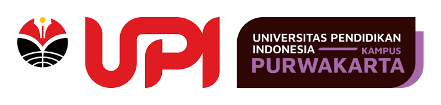
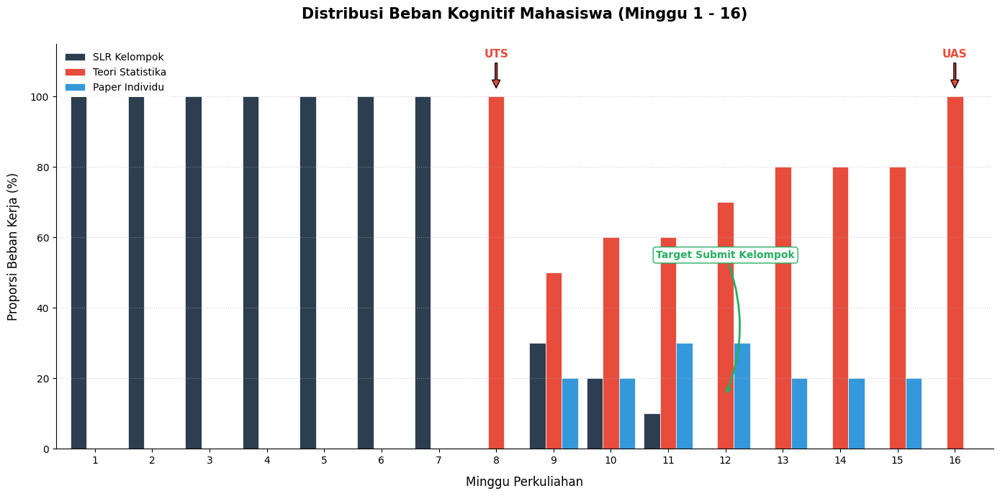
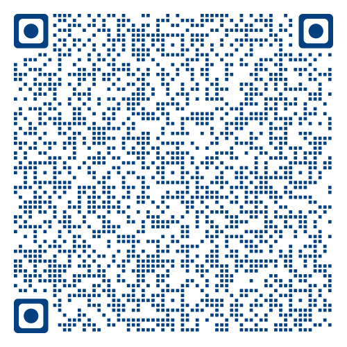
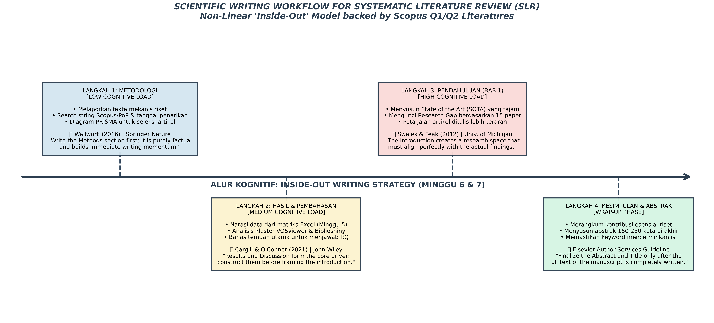

Mata Kuliah Metodologi Penelitian 2 | PSTI
Presented by M. Akda Barri

Fokus 6 minggu ke depan: 100% Manuskrip Kelompok (Garis Biru Tua).

[Salah]: Siswa, Mengajar, Nilai bagus.
[Benar]: Siswa SMK Kelas X (P), Media Game 3D (I) vs Ceramah (C), Peningkatan Skor Computational Thinking (O), di Purwakarta (C).
"Pengaruh Chatbot terhadap kemauan belajar"
Manakah bagian PICOC yang HILANG dari judul di atas?
Jawaban: Populasi (Siapa subjeknya?) dan Comparison (Dibandingkan dengan apa?)
Logika Boolean (The Magic Formula):
("Artificial Intelligence" OR "Generative AI") AND "Programming"
Ubah angka jadi visual riset standar:
Jika ingin mencari artikel tentang penggunaan VR (Virtual Reality) ATAU AR (Augmented Reality) dalam ujian Matematika, rumus Boolean apa yang benar?
("Virtual Reality" OR "Augmented Reality") AND "Mathematics"
TARGET HARI INI:
Pembersihan Data Sebelum Dibagi:
Sebelum membagi baris, seluruh anggota kelompok wajib menyaring 10 sampai 20 baris pertama bersama-sama dalam satu meja.
Tujuan: Menyamakan standar pemahaman kriteria inklusi dan eksklusi.
Bagi rata sisa baris data (contoh: 800 baris dibagi 4 orang = 200 baris per orang).
Dilarang mengeksekusi zona milik anggota lain untuk menjaga integritas data.
Setiap anggota mengeksekusi blok barisnya masing-masing secara fokus.
Gunakan filter kolom. Hapus tahun di bawah 2020 dan dokumen non-jurnal (Book, Chapter, Editorial, Review).
Baca hanya kolom judul. Buang artikel yang melenceng dari domain Sistem Informasi atau Pendidikan.
Contoh: IoT untuk peternakan sapi langsung tandai Buang (Out of Scope).
Baca kalimat pertama (tujuan) dan kalimat terakhir (hasil). Buang jika berupa review literatur lain atau wacana konsep.
Jika naskah utuh tidak dapat diakses gratis atau via kampus, tandai: Reports Not Retrieved.
Buka PDF yang lolos. Periksa bab Methods dan Results. Pastikan partisipan autentik dan instrumen evaluasi empiris terbukti jelas.
Target Korpus: 15 sampai 25 Paper Emas
Audit Uji Petik 10 Persen:
Kelompok menemukan artikel tahun 2023 yang sangat relevan tentang Game Edukasi, tetapi untuk mengunduh PDF diminta membayar $39.95.
Apa tindakan yang sah menurut protokol PRISMA 2020?
Tandai Buang (Eksklusi). Tulis alasan: Full-Text Paywalled / Not Retrieved. Peneliti tidak diwajibkan membeli naskah komersial di luar repositori yang tersedia.
Budi (2023) meneliti AR di biologi. Hasilnya motivasi naik. Alex (2024) membuat game 3D dengan skor SUS 85 tapi berat.
(Membaca menyamping per jurnal. Dilarang keras untuk jurnal Q1!)
(Membaca vertikal antar konsep. Mudah untuk disintesis!)
DILARANG menyalin paragraf utuh ke dalam sel. Ekstrak data mentahnya saja.
| Kode/Penulis | Subjek (P) | Teknologi (I) | Variabel (O) | Hasil Angka | Limitasi (Celah) |
|---|---|---|---|---|---|
| Budi et al. (2024) | 60 Siswa SMK | Game 3D (Unity) | Usability & Motivasi | SUS: 75. Motivasi naik 15% | Pengujian terlalu singkat |
| Alex (2023) | 120 Mhs S1 | Chatbot AI | Nilai Kuis Post-test | Selisih 8 Poin dari Kontrol | AI sering berhalusinasi |
The Master Vault & Jigsaw Execution:
Ilmuwan menulis berdasarkan fakta yang sudah diekstrak.
HARI INI DILARANG ADA YANG MENGETIK BAB 1 (PENDAHULUAN)!
Kita akan merakit Bab 2 (Metode) dan Bab 3 (Hasil).

Sebutkan basis data yang digunakan (Scopus, WoS) dan tuliskan Boolean Query (AND/OR) secara presisi matematis.
Justifikasi kriteria Inklusi & Eksklusi. Mengapa dibatasi 5 tahun? Mengapa prosiding ditolak?
Ceritakan angka penyusutan naskah. Letakkan Diagram Alir PRISMA 2020 kalian tepat di bawah paragraf ini.
Baca Matriks Google Sheets kalian secara Vertikal, lalu jahit menggunakan Manchester Phrasebank:
Karena isi tubuh (Bab 3) sudah kalian kuasai, menulis Bab 1 dan 4 akan sangat mudah hari ini.
Tepat pada menit ke-140 hari ini, folder pengumpulan tugas akan DIKUNCI MUTLAK.
Pastikan tata letak, sitasi (Mendeley/Zotero), dan bahasa sudah dirapikan. File .docx inilah yang akan kalian uji menggunakan sistem SOPHIA pasca-UTS nanti!